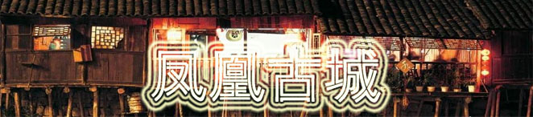
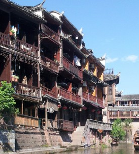

| 风景推荐 |  |
|  |
凤凰古城一般指凤凰古城（湖南省湘西自治州凤凰县凤凰古城） 凤凰古城是中国历史文化名城，首批中国旅游强县，国家4A级景区，曾被新西兰著名作家路易艾黎称赞为中国最美丽的小城。地理位置可概括为："西托云贵，东控辰沅，北制川鄂，南扼桂边"。这里与吉首的德夯苗寨，永顺的猛洞河，贵州的梵净山相毗邻，是怀化、吉首、贵州铜仁三地之间的必经之路。作为一座国家历史文化名城，凤凰的风景将自然的、人文的特质有机融合到一处，透视后的沉重感也许正是其吸引八方游人的魅力之精髓。 凤凰古城以回龙阁古街为中轴，连接无数的小巷，沟通全城。回龙阁古街是一条纵向随势成线、横向交错铺砌的青石板路，自古以来便是热闹的集市。凤凰古城的标志性建筑之一虹桥，原名卧虹桥，历史悠久。凤凰古城北门城楼本名"碧辉门"，采用红砂条石筑砌，既有军事防御作用，又有城市防洪功能，是古城一道坚固的屏障。凤凰古街两边建筑飞檐斗拱，店铺中陈设着琳琅满目的民族工艺品，浓浓的古意古韵，透出古街深厚。 凤凰古城分为新旧两个城区，老城依山傍水，清浅的沱江穿城而过，红色砂岩砌成的城墙伫立在岸边，南华山衬着古老的城楼，城楼还是清朝年间的，锈迹斑斑的铁门，还看得出当年威武的模样。北城门下宽宽的河面上横着一条窄窄的木桥，以石为墩，两人对面都要侧身而过，这里曾是当年出城的唯一通道。 湘西四季的气候都很适合出行，但七月或九月到湘西旅游还可以赶上苗族农历六月初六的大型歌会或立秋； 赶秋节，届时可以感受少数民族的特色节庆。 凤凰古城的春天，气温在20度左右，天气很好，放眼望去，一片绿色，早上起来还能看到雾气重重的沱江美景，正所谓烟雨凤凰，天晴有利于苗族、土族人做做商业，忙忙农活。此时去也可以让你充分体验一下民风民俗。 |